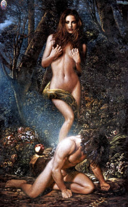

Pecado
 De: La Frikipedia, la enciclopedia extremadamente seria.
De: La Frikipedia, la enciclopedia extremadamente seria.
 El gran pecado fue comer una manzanita...
«Dame de tu fruta...
Vamos mi amor...
Te quiero putaa!!! Evaaa!!!»
~ Adán sobre el pecado original
Dícese de toda acción que va en contra de la religión y de los mandatos de los dioses de esta, sea el Dios Católico o el Dios verdadero (tu no importas opinión no cuenta, él es el verdadero y punto).
Los pecados pueden y probablemente serán diferentes de acuerdo a la religión que profeses.
Un pecado también es aquello en que los seres humanos y algunas clases de simios se empeñan más en hacer, por lo que los pecados tienen un enorme potencial como armas para la Dominacion Global.
Historia
La historia del primer pecado se registra en un famoso libro de fabulas para niños judios. Desde un principio cuando dios creó a los pendejos que tenian que poblar el planeta Adán y Eva. Se dio cuenta que Adán era medio Pendejo lento, y se arrepintió y envió al Fari para cojerse a Eva darle de manzanazos a Adán y hacer un trío revolcándose en la paja.
Y fue ahí donde comenzaron los pecados, los invento el Fari como medida de seguridad en el paraiso.
Otro famoso pecado que figura en este libro para niños, (observar como criaban a los niños judios...) es la continuación de la primera historia. Luego de ser expulsados del huerto de Edén y de tener sepso Adán y Eva tuvieron un hijo llamado Caín. Juntos se dedicaban a recolectar botellas plásticas y fueron muy felices. El negocio familiar estaba en la banca rota (pues aun no se inventaban las botellas plásticas), así que Adán y Eva pasaba temporadas enteras en casa en la que se dedicaban a jugar con su querido hijo Caín cuando estaba despierto y a mostrarse cariño cuando dormía. Debido a su gran tiempo libre y a que Caín contrajo la enfermedad del sueño, al despertar conoció a su pequeño y "querido" hermano Abel. Debido a los incesantes lloriqueos de Abel y su afán acaparador, la tarea de la recolección de botellas fue dada en su totalidad a Caín.
Cierto dia en que su puta madre se encontraba de mal humor le dijo: "No regreses hasta llenar el costal con botellas". Lleno de ira Caín vagó por 40 años hasta que invento la botella de piedra.
Al regresar con un costal lleno de botellas de piedra. (le tomo 3 años cargarlo de vuelta) Caín observó como sus padres jugaban con su pequeño hermano de 43 años. Fuera de sus casillas, asestó una patada voladora a su hermano, cercenando su cabeza, la cual terminó dentro de una red de pescar. Es así como Caín inventó así el asesinato y el fútbol al mismo tiempo (de ahi la poca diferencia entre ambos).
La popularidad de este libro "para niños" fue tan grande que se publicó en 1300 diferentes idiomas y se extendio por todo el mundo conocido. En Israel, Grecia, Roma,América, etc. ningún niño dormía sin que sus padres les relataran los cuentos de Génesis. Su éxito fue tal, que se publicaron más tomos y se recopilaron en la Biblia. Por todo el mundo los niños empezaron a jugar a dar patadas voladoras a sus hermanos, lo que generó una ola de asesinatos masivos y un gran número de niños que crecieron sin cabeza (véase: George W. Bush).
El pecado alcanzó su apogeo cuando fue lanzado el tomo Apocalipsis, el cual saco del primer lugar de ventas a Harry Petas. Las historias llenas de Sangre, putas mujeres públicas, pantallazos azules, y el relato del Fin del mundo fascinaron a los niños de todo el mundo antiguo, que se decidieron a imitar todo lo leido. (lo que llevo a la creacion del Pantallazo Azul de la Muerte).
Es así como el mundo se volvió tan cagado lindo como es ahora.
Tipos de Pecado
En General, los "científicos" los han clasificado en 2 tipos de pecados:
Pecados Católicos
O lo que la Iglesia Católica considera como pecados, aunque recientemente se ha publicado una lista estúpida de nuevos pecados capitales.
- Antiguos Pecados Capitales (y una pequeña explicación)
(Para más información vea: Full Metal Alchemist o La Divina Comedia)
-
- Relacionada directamente con el sepso. Es el pecado que cometes cuando lo tienes. De no tenerlo,
pobre miserable! el hecho de desearlo, mirarlo, escuchar hablar, o haber nacido por él también te hace caer en la lujuría.
- En el caso de cometer sepso homosexual, bisexual, zoofilico, o cualquier clase de perversión, el pecado es el doble de grave asi como también lo es la condena en el infierno.
- Afortunadamente, según nuestro amigo y colaborador Dante Alighieri, en su paseo imaginario por el infierno, (véase: Droga) se dio con la sorpresa que la lujuria es el pecado menos grave y el que tiene el castigo más benévolo. Por lo que podemos deducir que una
puta señorita pública es menos pecadora que un gordo.

El principal causante de este pecado revelando al mundo su malévola intención...
- Otro de los grandes pecados de la humanidad, este está relacionado con las hamburguesas
krusty mcdonalds y con USA. Las personas que cometen gula se caracterizan por ingerir más de una hostia y una copa de vino a la semana (estas SOLO deben ser tomadas los domingos por la mañana y obligatoriamente en misa).
- Una vez más nuestro siempre dispuesto
y drogadicto colaborador Dante Alighieri nos relató como es el castigo para estos pecadores en el infierno. Estos están condenados durante toda la eternidad a usar muebles de acero reforzado sumamente apretados para ellos, arder a 150º en invierno (y a 1000º en el infierno), a sufrir paros cardíacos cada 7 min 13 s, a pagar 10 dólares para alimentarse unicamente dos pedazos de "pan" con trozos de excremento de roedor, etc... En fin, parece que no es muy diferente a su vida terrenal...

Y creías que solo quería
dinero. Pobre Iluso...
- Hambre desmedida por el dinero y las posesiones materiales. Normalmente a dicho sujeto se le conoce como
un gran imbécil alienado un soñador con metas inalcanzables. Se caracterizan por sus recurrentes visitas a la Frikipedia editando y/o creando artículos sobre Cómo dominar el Mundo.
- Al aumentar la capacidad adquisitiva del codicioso (es decir, mientras más papel verde maneja el tío), la peligrosidad del codicioso aumenta en forma exponencial. El jefe, por ejemplo, explota a IP anónima durante doce horas sin descanso ni para el baño y con rebajas salariales para poder financiar las múltiples obras benéficas de la empresa (darle yates, mansiones y lamborghinis a los pobres y desemparados ejecutivos). Al seguir aumentando el dinero, las intenciones se vuelven aún más maleficás. Es bien sabido que el millonario Hugh Hefner tiene como plan adueñarse de todas las mujeres del planeta para tenerlas al servicio de su diabólica empresa Playboy como esclavas
sexuales, secretarias, abanicadoras, y para poder reemplazar continuamente a sus novias luego de que estas se escapen con el mago de la esquina.
- El caso más peligroso es el de William Henry Gates III o Bill Gates, como es conocido en la mafia. Al haber sido un friki como tú y como yo
pero más inteligente, el deseo de Dominación Global fluye por sus venas. En su adolescencia, no jugaba videojuegos todo el día como un friki normal, y lo que es aún más raro, no buscaba porno en revistas (no podría haberlo hecho en internet porque él invento la internet). Bill ocupaba su tiempo en diseñar y crear el sistema opertivo "Windows", con la novedad de que permitía mostrar una flechita en la pantalla del computador, pues era conciente de que la humanidad no podria resistirse ante el poder tentandor de las flechitas blancas. Luego de conseguir que todas las personas jugaran a mover la flechita alrededor de la pantalla, empezo la creación de programas que solo funcionacen con windows, luego de juegos, de teclados, de mouses, creo la internet, hizo que la flechita se convierta en una mano, compro al DOS y lo convirtio en MS-DOS, se volvio modelo de ropa interior, y lo que ningun otro friki pudo conseguir... se caso ( o_o ). (Para saber cuales son sus próximos planes, mira la imagen de la derecha y no ofrezcas resistencia...)

Ni siquiera este gatito se salva de la pereza...
- Zzzzz... Aummm... Ah? Que? Ah si! La pereza... Bueno, este pecado
Sí, el artículo que escribiste fue banneado... Y no importa a quién llames, nadie te hará caso.

Tú no le tendrias envidia ???
- Pecado muy practicado por un grupo de personas, que sentados desde su computador editando La Frikipedia para volverla "mejor", dedican sus ratos de descanzo (aunque no lo crean la tarea es pesada) a la observación de
porno clases virtuales de anatomía humana. En este caso la envidia es causada por una serie de motivos, por el tamaño y/o la forma de los instrumentos usados (obviamente bisturí, pinzas, etc), y por la cantidad de voluntarias para la experimentación o la sola presencia de una, pues a los frikipedistas nos son negadas las voluntarias a pesar de nuestro afan científico y nuestro interés por la anatomía humana.
- La envidia se manifiesta en su forma más pura y agresiva en tu novia. La novia se caracteriza por envidiar casi todo: los zapatos, el vestido, el cuerpo, el cabello y/o peinado, el novio (asi son...), el dinero, los padres, la casa, la decoración, los zapatos otra vez, viajes, carteras, fiestas, etc... (la lista es infinita) Si a tu novia le da un ataque de envidia,
corre lo más lejos y rápido que puedas y salva tu vida!!! >.< intenta tranquilizarla diciendole que la quieres por cómo es, aunque esto será tomado como una ofensa contra lo que es (una histérica) por lo que tratara de atacarte y devorar tus entrañas. Para salvarte, corre lo más lejos y rápido que puedas y salva tu vida!!! >.< aléjate tranquilamente de todas maneras estas muerto... Para más información, consultar Ira más arribita...
-
- A que no sabias de este!
Qué ignorante! Bueno, según la RAE (no todos somos idiotas como IP anónima) se define como "Jactancia del propio valer u obrar". Es decir, un chupa pollas presumido aquel que le grita en la cara a medio mundo que terminó todas las campañas de Warcraft si es hombre (y friki) o que tiene 10000 amigos en el feisbuk (si es mujer) y quiere que le den un premio nobel por ello. Se caracteriza también porque repetirá en todo momento de su puta vida que hizo lo más increible que podrias ver. Esto continúa sin parar hasta su aniquilación por parte de los que lo rodean (o de todo el mundo).
- La Vanagloria dejó de ser un pecado capital cuando Tomás de Aquino (no me comí ninguna palabra) lo eliminó para que pudiera decir a todos los que lo conocían que el era el mejor teólogo, filósofo, doctor,
hijo de puta y futuro santo que el mundo jamás conocerá sin correr el riesgo que pase la eternidad con el de al lado. Lo hizo con la excusa de que se parecia mucho a la Soberbia. Debido a esta degradación dejaremos de hablar de él... Ahora!
La verdad es que aquel que peca de soberbia no se ha visto en un espejo...
Pecados Verdaderos
¿Existen realmente los pecados?
Autor(es):
- Fordus
- Hari Seldon
- Roms
- Nadaquever
- Nolodoypornose
- Cibercrank
- AlemanH
- Prototype
- Manu Pege
- Dark temptation
Frikipedia 2005-2016, Licencia
GFDL 1.2 - Extraído por FrikiLeaks